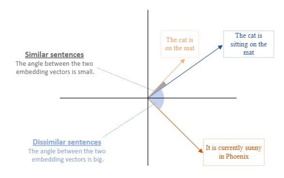

Stay in the loop, follow us on LinkedIn to catch fresh articles every week.
Generative AI has revolutionized how we interact with information, but beneath its fluent responses lies a persistent challenge: relevance and trust. In enterprise environments, where accuracy and context are non-negotiable, AI that “sounds smart” isn’t enough. Teams need systems that deliver answers grounded in real, up-to-date data, not vague generalizations or outdated snapshots.
This article is for enterprise architects, data leaders, and AI strategists who are ready to challenge the illusion of LLM intelligence and embrace a mindset shift: success in AI isn’t just about generation, it’s about grounded relevance. We’ll explore why Retrieval-Augmented Generation (RAG) is essential, and how to architect scalable, production-grade RAG pipelines using Azure’s AI ecosystem. From ingesting and enriching proprietary data to embedding, retrieving, and generating context-aware responses, this guide lays out the building blocks for intelligent, trustworthy AI.
Whether you're deploying a chatbot, internal search assistant, or domain-specific AI tool, this blueprint will help you unlock the full potential of your enterprise knowledge, turning it into real-time answers that drive clarity, confidence, and impact. So let’s start by unpacking the core challenge: The Illusion of LLM Intelligence: When AI Speaks but Doesn’t Deliver Accuracy. It’s not just a technical flaw; it’s a mindset trap. Let’s break it down.
Despite their hype, generative AI models often fall short where it matters most: precision, relevance, and trust. They’re brilliant at producing fluent language, but that fluency can mask outdated facts, irrelevant links, or vague generalizations. Users end up sifting through polished noise instead of getting actionable answers. From a technical perspective, this manifests in several critical ways:
Stale outputs: Models trained on static corpora can’t reflect recent changes in policy, pricing, inventory, or compliance.
Disconnected reasoning: Without retrieval, responses lack traceability, making it impossible to audit or validate source logic.
Semantic drift: Answers may sound plausible but diverge from enterprise-specific terminology, structure, or priorities.
Misalignment Between AI Ambitions and Execution: While enthusiasm for AI is high, many leaders lack the operational clarity to implement it successfully
These issues aren’t just theoretical, they degrade user experience and operational trust. When systems consistently return off-target results, users disengage, escalate to manual support, or bypass the AI altogether. That leads to increased cost, reduced adoption, and missed opportunities for automation.
The technical takeaway is clear: generation without retrieval is a brittle foundation. To deliver answers that are timely, traceable, and tailored to your organization, the model must be conditioned on your data. Let’s explore how Retrieval-Augmented Generation (RAG) solves this, starting with why retrieval isn’t optional in enterprise-grade AI.
At its core, Retrieval-Augmented Generation (RAG) enhances a language model (like GPT) by giving it access to external data sources at query time. Instead of relying solely on what the model was trained on, RAG retrieves relevant documents from a knowledge base and uses them to generate more accurate, context-aware responses.
RAG architecture enables:
Real-time responses grounded in enterprise knowledge: RAG can pull from internal databases, wikis, or document repositories to answer questions with up-to-date, organization-specific information.
Contextual understanding of proprietary documents: By retrieving and conditioning on relevant files, like PDFs, emails, or reports; RAG provides answers that reflect the nuances of your internal content.
Dynamic updates without retraining the model: Since the retrieval layer is decoupled from the model itself, updating the knowledge base instantly improves response quality without the need for costly fine-tuning.
By now, you’ve got a solid grasp of what RAG is and why it matters, so let’s shift gears and explore how to actually design an enterprise-grade RAG system using the Azure AI ecosystem. This is where architecture meets execution.
Implementing a scalable Retrieval-Augmented Generation (RAG) pipeline on Azure requires more than just connecting a language model to your data; it demands a well-orchestrated system that spans ingestion, enrichment, semantic indexing, optimized retrieval, and grounded generation. The following components outline each stage of the architecture, showcasing how Azure services like AI Search, OpenAI, AI Foundry, and orchestration tools come together to deliver real-time, context-aware responses powered by enterprise knowledge.
Now, let’s break down the core implementation process and explore how each layer contributes to a robust, production-ready RAG system:
Document ingestion & enrichment: Centralize data and extract metadata using Azure AI Search skillsets.
Embedding & vector indexing: Convert content into semantic vectors with Azure OpenAI or AI Foundry models.
Contextual retrieval & optimization: ilter, rank, and match queries using hybrid search and multi-layered logic.
Generative response orchestration: Use LangChain or Semantic Kernel to ground LLM output in retrieved context.
Monitoring & feedback loops: Track precision, latency, and user signals with Azure Monitor and API Management.
📥 Document Ingestion and Enrichment: The foundation of any scalable RAG pipeline begins with centralizing your enterprise data, transforming fragmented sources into a unified, searchable knowledge base. Azure AI Search enables this by ingesting content from platforms like Azure Blob Storage, SharePoint, and SQL databases, then enriching it with built-in AI skillsets for metadata extraction, document chunking, entity recognition, and language detection. Custom skillsets further refine this process, allowing domain-specific logic to surface insights like financial metrics or legal clauses with precision.
For example: A legal firm could use a custom skillset to extract case numbers and client names from documents, making them instantly retrievable. Combined with semantic indexing and embedding support, Azure AI Search becomes the ideal search engine to power your RAG pipeline with precision, scalability, and domain adaptability.
🧠 Embedding and Vector Indexing: Once documents are ingested and enriched, they can be indexed for traditional keyword-based search using Azure AI Search. While this indexed data is useful for many applications, it lacks the semantic depth needed for context-aware reasoning in a RAG pipeline.
To unlock that capability, the content need to be transformed into vector embeddings using models like Azure OpenAI’s text-embedding-ada-002 or domain-specific models from AI Foundry. Vector embeddings are numerical representations of data, like words, images, or documents, expressed as arrays of floating-point numbers. These vectors capture the semantic meaning and relationships between data points in a high-dimensional space. These embeddings act as the foundation for semantic search, enabling the system to retrieve more accurate, context-aware results at query time.
For example: A healthcare provider could embed clinical notes and radiology images, storing them in a vector database such as Azure AI Search (with vector support) or Azure Cosmos DB for MongoDB vCore. This allows the system to retrieve relevant insights based on conceptual similarity, not just keywords making it possible to surface patient cases with similar symptoms, even if the phrasing or format differs.
🔍 Retrieval and Optimization Layers: Retrieval is where the magic happens. When a user submits a query, the system activates a multi-layered process to surface the most relevant information. It begins with L1 optimization, filtering results based on metadata like document type, author, or date, ensuring the search space is narrowed to what's contextually appropriate.
Then comes L2 optimization, where semantic similarity search is applied over the vector index using embeddings. This allows the system to match the meaning behind the query, not just the keywords. For example: A financial analyst querying quarterly reports might first filter by fiscal year (L1), then retrieve documents discussing revenue trends even if phrased differently (L2).
To further refine relevance, L3 optimization re-ranks the retrieved results using scoring algorithms, user feedback, and behavioral signals. This layer can incorporate personalization such as user roles or past interactions, and domain-specific re-rankers tailored to fields like finance, law, or healthcare.
Additional enhancements include enriching metadata during ingestion with Azure AI skillsets, combining keyword and vector search for hybrid precision, and caching frequent queries to reduce latency. Together, these layers ensure the RAG pipeline delivers fast, accurate, and context-aware responses that evolve with your data and user needs.
💬 Generative Response with Context: The retrieved documents are then passed to a generative model hosted on Azure OpenAI Service, or hybrid model such as GPT-4, which forms the final layer of the RAG pipeline. Using orchestration frameworks like LangChain or Semantic Kernel, the model conditions its output on the retrieved context, meaning it doesn’t just generate answers from pre-trained knowledge, but actively incorporates the most relevant, up-to-date information from your enterprise data. This enables grounded, domain-specific responses that reflect your organization’s unique language and priorities.
For example: A customer support chatbot could use this setup to answer product questions by referencing internal manuals, troubleshooting guides, or policy documents. Because the retrieval layer dynamically feeds the model fresh context, there's no need to retrain the model every time your documentation changes. This approach ensures responses are not only accurate and relevant, but also scalable and maintainable across evolving knowledge bases.
⚙️ Orchestration and Deployment: To tie everything together, Azure offers a robust suite of orchestration tools that streamline the deployment of your RAG pipeline. Services like Azure Functions, Logic Apps, and App Service allow you to build scalable APIs and event-driven workflows that connect retrieval, generation, and user interfaces seamlessly.
For conversational experiences, Microsoft Copilot Studio agents can be layered on top of this architecture to deliver dynamic, context-aware interactions. These agents can invoke your RAG pipeline via APIs, route queries through orchestration logic, and surface grounded responses directly within Teams, web apps, or custom channels, all without requiring deep code expertise.
These tools handle everything from query routing to context assembly, ensuring that your pipeline runs efficiently and securely across environments. For deployment at scale, Azure Kubernetes Service (AKS) provides high availability and container orchestration for chat interfaces, dashboards, or custom applications.
For example, a retail company could deploy a RAG-powered assistant that helps employees query inventory data, supplier contracts, and training materials; all through a single conversational interface. This modular setup ensures that each component of the pipeline is independently scalable, maintainable, and optimized for enterprise-grade performance.
📊 Monitoring, Feedback, and Continuous Improvement: Finally, monitoring and optimization are essential for maintaining the reliability and performance of production-grade RAG systems. Tools like Azure Monitor and Application Insights offer visibility into system behavior, including latency, error rates, and usage patterns.
For more nuanced metrics such as retrieval precision or user satisfaction; you can define and track custom telemetry based on user feedback, evaluation datasets, or behavioral signals. When exposing your RAG APIs, Azure API Management adds observability, access control, and analytics, helping you govern usage and ensure secure, scalable access.
To maintain trust and accuracy, especially in sensitive domains like legal or healthcare, it’s important to implement human-in-the-loop review and integrate content safety mechanisms to detect and moderate potentially harmful or non-compliant outputs.
For example, a compliance team might audit flagged responses for regulatory accuracy and feed corrections back into the system. Combined with feedback loops and safety filters, this continuous improvement cycle ensures your RAG pipeline evolves responsibly alongside your content and users
Cost remains a critical factor, so before we close with final thoughts and a call to action, let’s explore how smart optimization strategies can drive meaningful financial impact throughout development.
In Retrieval-Augmented Generation (RAG), cost-based optimization refers to strategically designing the pipeline to minimize compute, latency, and token usage without sacrificing relevance or trust.
🔍 Key Cost Drivers in LLM RAG on Azure
In Azure-based RAG systems, the primary cost drivers include compute usage (especially for large LLM inference), vector database operations (e.g., Azure AI Search, PostgreSQL with pgvector or Azure Cosmos DB with vector indexing), storage for embeddings and documents, and data transfer between services. Frequent updates to the knowledge base such as ingesting new documents or re-embedding content can significantly increase costs due to repeated vectorization (using Azure OpenAI embeddings), re-indexing, and storage churn.
Another hidden cost comes from over-fetching during retrieval. If the system retrieves too many documents per query or uses unnecessarily large embedding dimensions, it inflates both inference latency and token usage during LLM generation. This is especially costly when using Azure OpenAI models like GPT-4 Turbo, where token-based billing can quickly scale with verbose prompts and responses.
Beyond cost, over-fetching during retrieval can also degrade performance, especially when models are hosted in environments with limited auto-scaling flexibility. Bottlenecks in compute or memory can slow response times and erode user experience, turning real-time intelligence into avoidable delays.
💡 Optimization Strategies (with Update Frequency in Mind)
To mitigate costs, implement incremental embedding pipelines using Azure Functions or Azure Data Factory to only re-embed changed content. Use change detection (e.g., Azure Blob change feed or metadata hashing) to avoid redundant processing. Additionally, leverage hybrid search (semantic + keyword) in Azure AI Search to reduce dependency on high-dimensional embeddings for every query.
For frequently updated corpora, consider decoupling retrieval from generation using a two-stage approach: a lightweight retriever (e.g., BM25 or small embedding model) narrows candidates, and only top results are embedded or passed to the LLM. This reduces token load and embedding churn. while smart caching and retrieval tuning help avoid redundant vector operations and lower latency. These optimizations are not just technical enhancements, they’re essential for making enterprise AI financially sustainable and scalable.
Example: a news aggregator using Azure OpenAI and Azure AI Search can batch daily updates, embed only new articles, and cache top queries to avoid redundant LLM calls.
Building a Retrieval-Augmented Generation (RAG) pipeline on Azure isn’t just about connecting services, it’s about designing a cohesive, scalable system that transforms raw enterprise data into intelligent, context-aware responses. From ingestion and enrichment to semantic indexing, optimized retrieval, and grounded generation, each layer plays a critical role in delivering high-quality answers that reflect your domain expertise.
By leveraging Azure’s ecosystem AI Search, OpenAI Service, orchestration tools, API Management, and monitoring frameworks; you can deploy a RAG solution that’s not only powerful but also secure, adaptable, and production-ready. Whether you're supporting customer service, legal research, or internal analytics, this architecture empowers your teams to unlock insights faster and with greater confidence.
Deploying a robust RAG pipeline requires more than just technical tools; it demands strategic alignment, domain expertise, and hands-on experience. That’s where the Tech-Insight-Group technical team comes in. Whether you're just starting your journey or scaling an existing solution, our experts can embed directly into your internal teams or operate as external consultants to accelerate delivery, reduce risk, and ensure architectural best practices.
We specialize in guiding organizations through every phase of RAG implementation from data ingestion and enrichment to vector indexing, retrieval optimization, and secure deployment. With deep knowledge of Azure’s AI ecosystem and real-world experience across industries like finance, healthcare, and retail, Tech-Insight-Group helps you build solutions that are not only technically sound but also tailored to your business goals. Think of us as your strategic co-pilot, ready to architect, troubleshoot, and evolve your AI systems alongside you.
Thank you for taking the time to read this article, we hope it sparked new ideas and practical insights for your enterprise AI journey. Kudos to our entire team for their dedication, and a special shoutout to our Principal Data & AI Architect, Jean Joseph, whose vision and technical leadership made this work possible. If you found this useful, please like, comment, follow, and share to help others in the community benefit as well.
Remember, Tech-Insight-Group can partner with your team to accelerate AI adoption, offering data, AI, and visualization consulting, upskilling and hands-on training. Please contact us to start a pilot, schedule a workshop, or request a custom engagement.
Useful Resource: Introduction | Integrating Azure PaaS and AI Services for AI Design Wins
Disclaimer: All diagrams and images are sourced from Microsoft documentation or blogs.
#AI #DataScience #AzureOpenAI #ArtificialIntelligence #GenerativeAI #DataEngineering #DataAnalyst
© 2024 Tech-Insight-Group. All rights reserved.